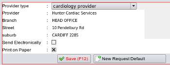

|  |
- Adding a default provider
- Click the New Default Provider button, and the select the provider type. If any providers exist they will be presented as a pick list for your choice together with the default head office branch. Complete each line then click the save button (F12).
|